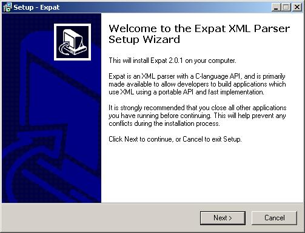
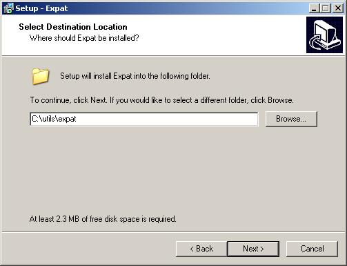
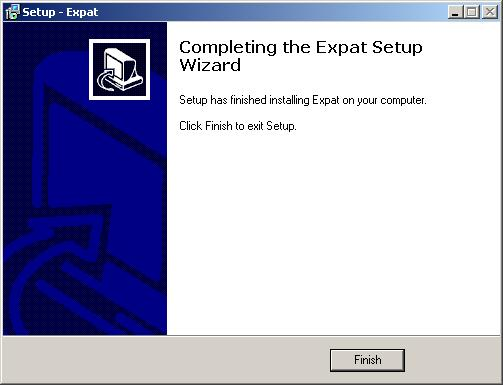
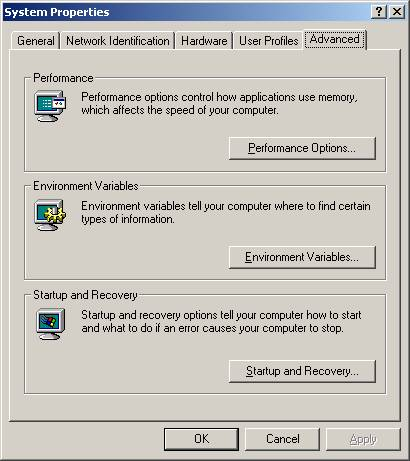
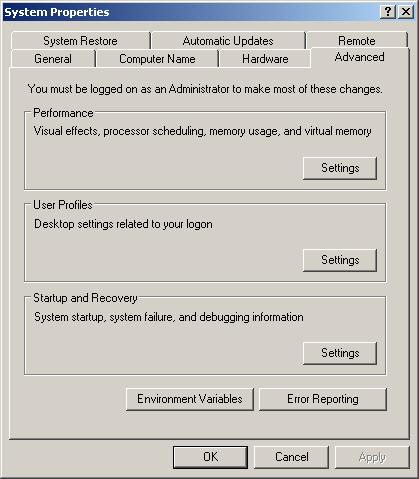

This will show how to install the expat XML parsser.
The installation and setup of expat consists of these main steps:
- Dowloading the expat installation file (free download).
- Installing expat.
- Configuring your environment for expat.
You need to download and install the necessary software packages. The links and versions are as of 15-Jun-2007.
Use the following link to download expat_win32 version 2.0.1 (expat-win32bin-2.0.1.exe):
Launch the expat-win32bin-2.0.1.exe setup file and click "Next".
Set the path to C:\utils\expat and click "Next".
Click "Finish".

Open the System Control Panel via the "Start Menu - Settings - Control Panel". The screen shot if for Windows 2000 and Windows XP has a different icon but the control panel has the same name.

Check the environment variables settings.
Windows 2000
Click the "Environment Variables..." button of the "Advanced" tab.

Windows XP
Click the "Environment Variables." button of the "Advanced" tab.

Under the "System Variables..." section add :
Expat's
bindirectory, i.e.C:\utils\expat\bin, to thePATHvariable.
Under the "User Variables..." section add :
![[Note]](../images/admon/note.gif)
Note The variables may have additional paths to them depending on what else you have your development system configured for. Expat's
Source\libdirectory, i.e.C:\utils\expat\source\lib, to theINCLUDEvariable. It should read:C:\Utils\expat\Source\lib;C:\VS8\VC\PlatformSDK\Include
Expat's
bindirectory, i.e.C:\utils\expat\bin, to theLIBvariable. It should read:C:\Utils\expat\bin;C:\VS8\VC\PlatformSDK\lib
You are now ready to run the
expatutility.